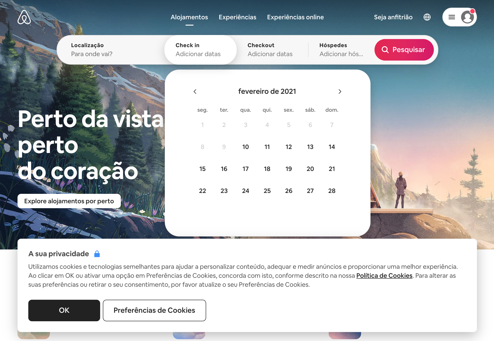
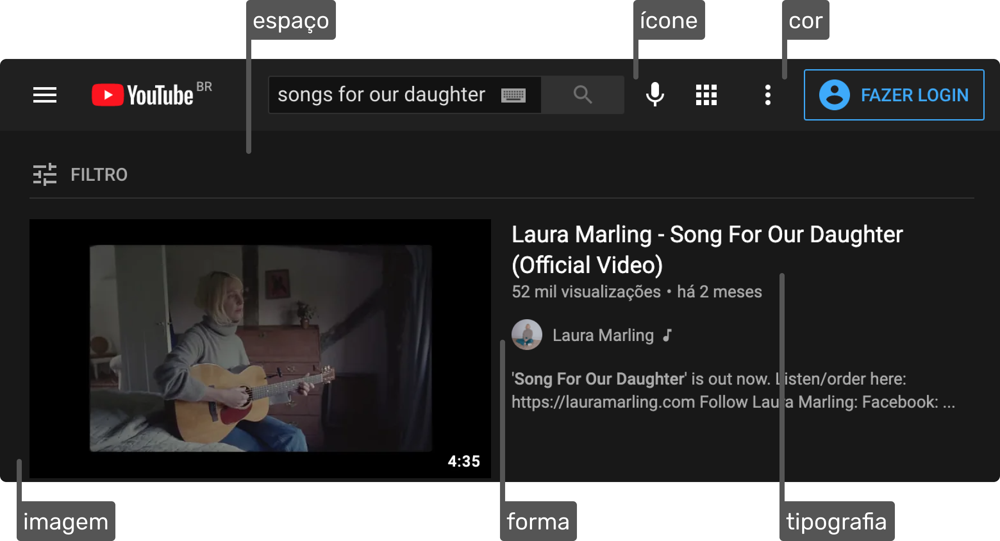
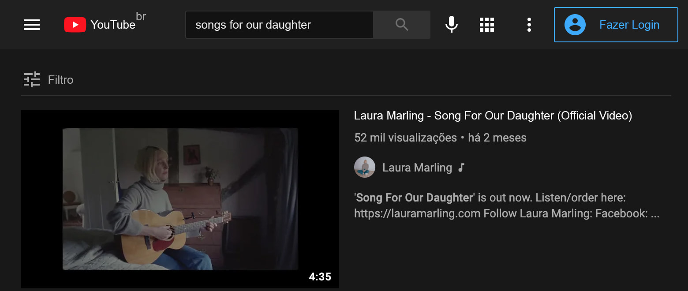
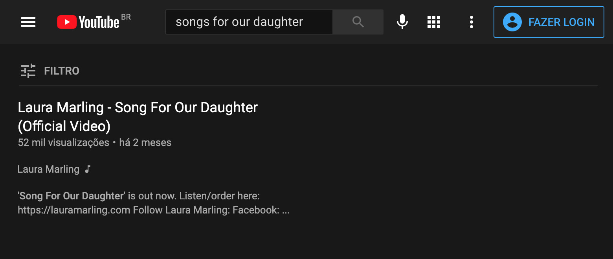

UI Design para Iniciantes
UI Design
UI Design
UI = User Interface = Interface de Usuário
Foco no aprendizado de interfaces digitais.
Elementos da Interface
Formas, espaço, cores, tipografia, imagens e ícones.
Interface de Usuário
Interfaces digitais são compostas por textos, textos funcionais, botões, imagens, ícones, vídeos e outros elementos.

Elementos da Interface
As escolhas devem ser consistentes com o projeto. É na consistência que criamos uma unidade, e fazemos com que todos os elementos da interface pareçam pertencer a mesma.

Importância dos Elementos
A ausência de um elemento apenas, pode arruinar o seu projeto.
Original
Sem Tipografia

Sem Cores
Sem Ícones
Sem Imagens

Sem Espaço
Boa Interface
Propósito
Existe um motivo claro para a existência do elemento.
Consistência
Os elementos se comunicam visualmente. Cores em harmonia, espaçamentos equivalentes, ícones de uma mesma família e mais.
Necessários
A remoção do mesmo tornaria a experiência pior.
Exemplo de Interface

• Os ícones são consistentes
• O botão mais importante possui o maior contraste
• As informações disponíveis possuem propósito
Exercício
Selecione 2 sites e identifique todos os elementos da interface.